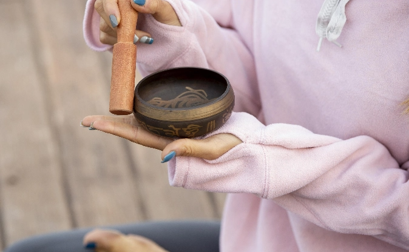
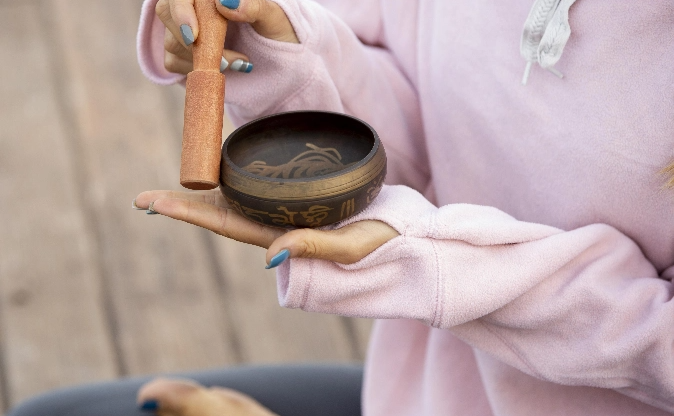

SELECT LANGUAGE

Let go of what no longer serves
through safe, supported emotional
expression.
DAY 3
DAY 4
DAY 5
DAY 6
DAY 7
DAY 2
VOICES THAT HEAL AND INSPIRE
JOIN US IN HEALING TOGETHER


BLOG

 

THE YOGA JOURNAL: MIND, BODY, BALANCE
THE INNER LIGHT
THE HEALING SOUND
MUSCLE & MIND